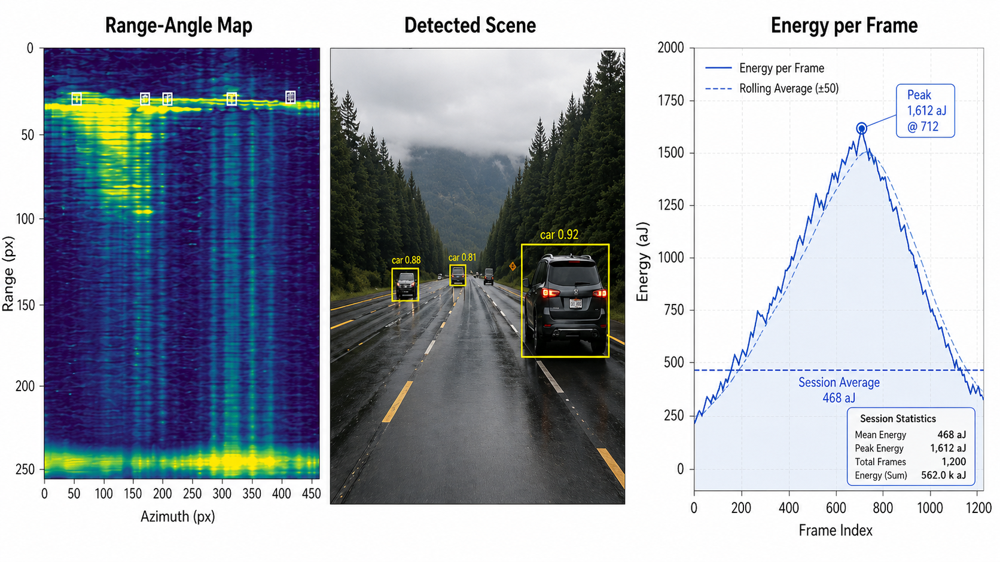
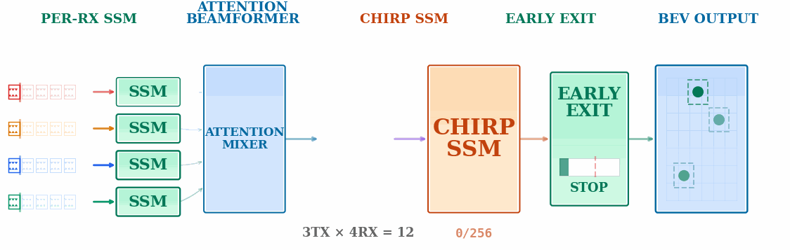
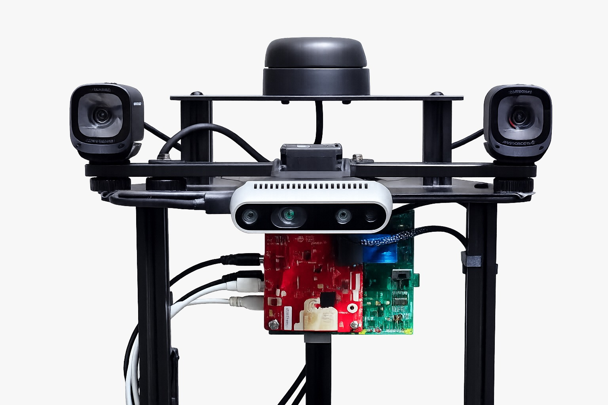
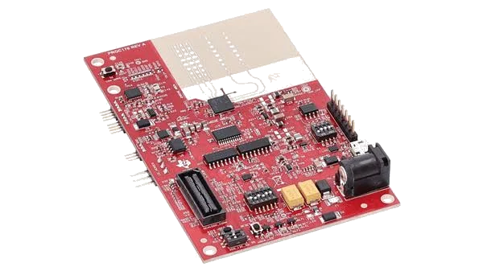
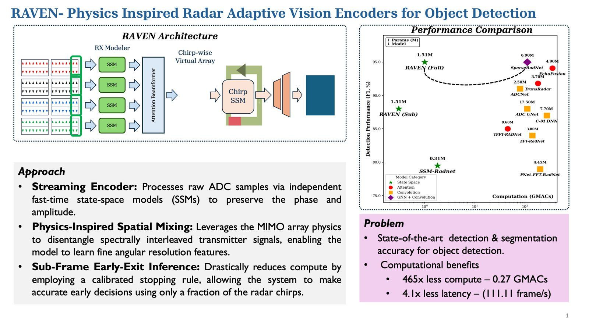

Real-time human detection from raw FMCW radar signals on edge hardware. Physics-inspired streaming architecture with adaptive early-exit inference.



Mobile robot with radar, 2D LiDAR, RGB-D and stereo cameras, Intel i3 edge processor.

76–81 GHz FMCW radar-on-chip. 3TX, 4RX, 12 virtual elements in TDM-MIMO. Up to 4 GHz chirp bandwidth.
